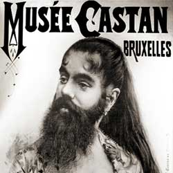

|
| Home | Talent | Cosmetic | Deformity | Abnormal | Ethnological |
The Bearded Woman
Bearded women are sought out as one of the most popular side show or Freak Show acts. Much like the illusion of the extra-limbed girl, the bearded woman may either have a real beard, as some women do, or have a fake bear put on by spirit glue, an old theatrical tactic. Pop culture refers to bearded women frequently as a component of Freak Shows and it remains today as one of the most notorious acts from this era.
|